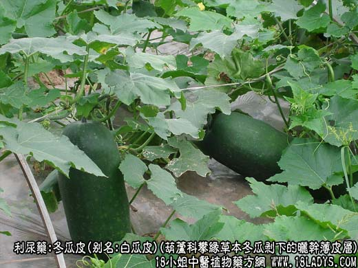
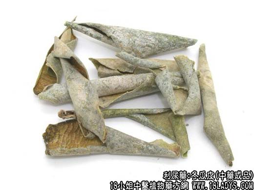
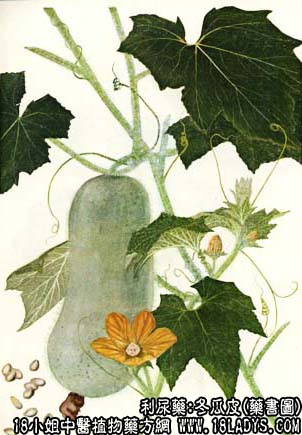

冬瓜皮为冬瓜的外层果实，系食冬瓜时剥下的薄皮层晒干而成。本品为不规则的碎片，大小不等，或卷曲成筒状。外表皮绿色或黄绿色，有的被有白霜（蜡粉）较光滑。内表面黄白色较粗糙。质薄而脆。气无味淡，以皮薄，绿色，条长者为佳。
炮制：生用。
性味：甘寒。
归经：脾，小肠经。
功能：清热、利水消胀。
主治：四肢浮肿，腹胀，小便不利等症。
附：冬瓜皮 味甘，性微寒。能清热利尿，但效力较弱，治一般体弱或脚气引起的轻症浮肿、小便不利。
用量：30~60g 两，常配赤小豆，生薏苡仁，红糖等水煎服。